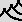

How to create
a "Giant Causeway" landscape with Geomorph
Using the "lift edges" tool and a
"water map"
The terraces how-to shows that the
"lift edges" tool  can be
used to create irrigated terraces
by
superimposing a "water field" with a height field transformed in
terraces.
can be
used to create irrigated terraces
by
superimposing a "water field" with a height field transformed in
terraces.
The technique can also be used to improve the realism of a "Giant
Causeway"-style rocky seashore, by wetting the top of the basalt
pillars.
The scene giant_causeway.pov
is provided for this tutorial. It is a derivative of terraces.pov,
using different
rock texture, terrain scaling and ligthing.
Step 1 - Start with the standard "Subdivision 2" terrain  . The
example
shown was done with a 1024x1024 map. A large height field gives more
natural cells boundaries and more latitude to erode the edges of the
basalt pillars.
. The
example
shown was done with a 1024x1024 map. A large height field gives more
natural cells boundaries and more latitude to erode the edges of the
basalt pillars.
Step
1 - The
standard "Subdivision 2" terrain
Step 2 - The original terrain
almost fills up the
full altitude range (0-65535). We need some room to raise the edges of
the higher pillars. Choose the
"Brightness / Contrast" tool  ,
decrease the contrast by -30 or the like.
,
decrease the contrast by -30 or the like.
Step 3 - Stratify the terrain
with the "Giant Causeway" tool . Here a
radius of 30 was used, with a line width of 2 and a smoothing radius of
2. Be sure to use a smoothing radius less or equal than the line width,
otherwise the "Lift edges" tool would not be able to use the lines
between the cells as a "black threshold" - some edges won't be raised.
Step 4 - (Optional) If you want
irregular puddles, in the "Giant Causeway" dialog, before accepting the
stratification of the terrain, go into the merge
subdialog and mix the
source and the result at approximately 70% of the result (the default
being 100% of the result). This will add some noise on top the the
pillars.
Step
4 - To avoid too regular puddles like in this picture,
mix source and result in the Giant
Causeway tool
Step 5 - Creation of the water
map: If you skipped step 4, clone the terrain with the clone button
("Copy under a new name") in the menu bar , call
the clone
hf_water.png. If you did step
4, your current map cannot be used as a water map because the top of
the pillars are not flat anymore. Then, save your current map under the
name you like,
create a water map by repeating steps 1 to 3 and save the result as hf_water.png.
Step 6 - Use the "Lift edges"
tool on the main terrain. Use the
default
radius of 20. Unlike the terraces tutorial, you should check the "black
threshold" box, to use the lines as edges boundaries. A raising level
scale appears after executing the transformation. Try a raising
level
between 5 and 10. In the current example, a level of 7 was used.
Step 7 - (Optional) If you want
slightly irregular edges like in the
example shown, use the "Rain erosion"  tool on the main terrain, at its
defaults settings.
tool on the main terrain, at its
defaults settings.
Step 8 - (Optional) If you
performed step 7, some water map edges could
be too wide and "stick out". Use the "Crests" tool  on hf_water.png to
narrow the water cells. The default of 3 steps
is probably too much, one step would be sufficient.
A
section of the main height field, after the edges have been raised and
eroded
Step 9 - Choose the default
camera 2, render  with giant_causeway.pov.
with giant_causeway.pov.
Step 10 - Fine-tune the
contrast with the brightness / constrast tool ,
if required: Some pillars may appear higher than the water,
others lower. If
the higher pillars are under the water and the lower pillars over it,
increase the terrain contrast. If the higher pillars are over the water
and the lower under it, decrease the contrast. A level change of
±1 to ±5 should be sufficient. You can render the scene
with different levels before accepting the change. Sometimes you may
also have to slightly adjust the brightness.
Here
the contrast of the terrain should be tuned to lower the water on
higher pillars
Step 11 - In the present case,
to fill up the rendered image with the terrain, I edited the
giant_causeway.pov file to
stretch the
terrain in the X and Z directions by a factor of 1.7, and decrease the
height by a factor of 0.7. These changes appear as comments in the file
distributed with version 0.4. Do not forget to change the scaling of
both the terrain and the water map. As usual, the relevant lines in giant_causeway.pov appear after the
/**********/ line:
/*******************************************************************************************/
object {hf scale <1,1,1> translate y*0 texture {rock3 scale 0.6}}
// object {hf scale <1.7,0.7,1.7> translate y*0 texture {rock3
scale 0.6}}
#ifdef (water)
object {water scale <1,1,1>}
// object {water scale <1.7,0.7,1.7>}
#end
If you feel happy with the vertical scaling (I mean, scale X = scale Y
= scale Z), indeed, you don't need to stretch the terrain to fill up
the image. Decreasing the camera angle in the preview area is
sufficient.
Step 12 - (Optional) The
example shown was rotated by 45 degrees with the rotate tool  , to
get a less straight result. Do not forget to rotate both the
main terrain and the water map.
, to
get a less straight result. Do not forget to rotate both the
main terrain and the water map.
Now the scene can (almost) be used as a building block for a seashore
landscape.
Further improvements
There are obviously a few things to improve:
(1) Actual basalt pillars are slighly less regular. One way to simulate
this would be to start from the "crack network" tool and fill "regular
- perturbated" cells with a stratification of the height field. It is
not possible with version 0.40 of Geomorph. Some
work for a future version, maybe.
(2) Actual basalt pillars are more crackled, on the X-Z plane and on
the Y axis. With version 0.40 of Geomorph, cracks can only be
created for the whole map. In real life, X-Z cracks are often bounded
by the cells. Vertical cracks (Y) can probably be simulated by a
texture applied where the slope is at 90 degrees.
(3) The rock around the puddles does not look wet enough. It is not too
difficult to render wet rocks when the water is a plane (see granite
reef in the
cracks tutorial). But here, puddles are at different levels.
One
solution would be to use a wet texture for the whole rock formation to
simulate a rainy day... More
seriously, it can maybe be solved by a texture map, generated by
intersecting the main height field and a water map slightly brighter
(higher)
than the original one. All the points under the modified water map
would have a wet texture. Another solution would be to experiment with
a slope texture: the wet parts are generally those where the slope is
lower.
Any feedback or suggestion is welcome.
____________________
Written in December 2006
 Back to the
documentation index
Back to the
documentation index
Contact:
Patrice St-Gelais